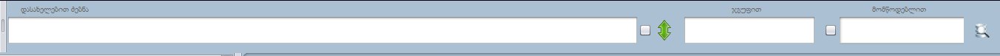
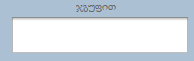
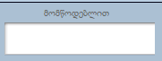
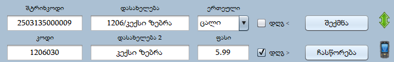
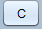
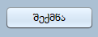
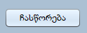

პროდუქციის მოსაძებნად შეგვიძლია გამოვიყენოთ ფილტრაციის ფანჯარა

პროდუქცია შეგვიძლია მოვძებნოთ შტრიხკოდით, დასახელებით , კოდით , ჯგუფით და
მომწოდებლით. მოცემულ ველში შეგვიძლია ჩავწეროთ შტრიხკოდი(ასევე შეგვიძლია
შტრიხკოდიდან ბოლო რამოდენიმე ციფრი ჩავწეროთ), ან ჩავასკანეროთ პროდუქცია.
გაფართოებული ძიებისთვის შეგვიძლია გამოვიყენოთ
 ღილაკი. გამოჩნდება დამატებითი ფანჯარა:
ღილაკი. გამოჩნდება დამატებითი ფანჯარა:
-

შეგვიძლია ჩავწეროთ ჯგუფის ოთხ ნიშნა კოდი , ან დასახელება.
-

უნდა ჩავწეროთ მომწოდებლის დასახელება , ავირჩიოთ და მოგვიძებნის
პროდუქციებს რომელიც ამ მომწოდებელს შემოაქვს, ან
შემოუტანია.ფილტრაციების გამოყენება შეგვიძლია კომბინირებულად.
პროდუქციის შექმნა

ისეთი პროდუქციის მიღების დროს, რომელსაც ვიღებთ პირველად , იქიდან
გამომდინარე, რომ პროდუქცია არ გვაქვს პროგრამაში, მოგვიწევს პროდუქციის
შექმნა. შექმნა შეგვიძლია პროდუქციის ფანჯრიდან.
პირველ რიგში, უნდა დავაჭიროთ

ღილაკს, რადგან გასუფთავდეს ველები. შევიყვანოთ ველებში ინფორმაცია:
- შტრიხკოდი - შევიყვანოთ (ჩავასკანეროთ) პროდუქციის შტრიხკოდი.
-
კოდი - ალტერნატიული შტრიხკოდი , შეგვიძლია ჩავწეროთ იგივე რაც
შტრიხკოდში.
-
დასახელება - შევიყვანოთ პროდუქციის დასახელება , რეკომენდირებულია
შევიყვანოთ რაც შეიძლება კონკრეტული დასახელება.
-
დასახელება 2 - დასახელებაზე “ENTER”- ზე დაჭერით ავტომატურად ჩაიწერება
დასახელება.
-
ერთეული - შევიყვანოთ რა ერთეულში უნდა გაიყიდოს პროდუქცია , წონა თუ
ცალობა. ვუთითებთ „ცალი“ ან „კგ“ (წონის პროდუქციაზე აუცილებლად უნდა
მივუთითოთ „კგ“!!! კილო , კილოგრამი არ შეიძლება, არ გადაიგზავნება
სასწორზე.)
- ფასი - ვუთითებთ რა ფასშიც უნდა გავყიდოთ პროდუქცია.
- დღგ > - მიღების დღგ.
- დღგ < - გატანის დღგ.
ყველა ზოლის შევსების შემდეგ ვაჭერთ

-ს.
ჩასწორება
იმ შემთხვევაში თუ გვინდა პროდუქციაზე ინფორმაციის შეცვლა, უნდა ავირჩიოთ
პროდუქცია რის შემდეგაც ავტომატურად შეივსება ველები :

ჩავასწოროთ სასურველი ინფორმაცია და დავაჭიროთ ღილაკ

-ს.